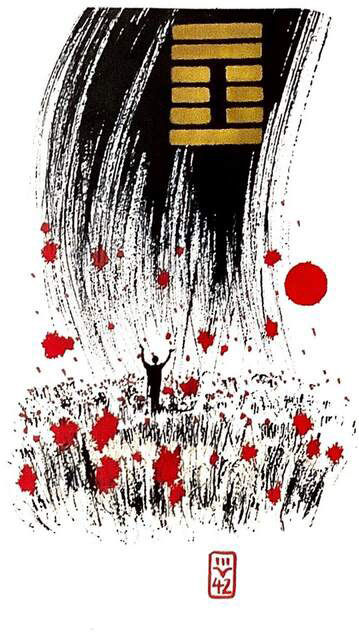

풍뢰익(이로울 익)
소길 9★ 운명카드 4
바람이 불고 천둥이 치니(풍-뢰) 비가 온다.
골고루 만물을 적셔 유익함을 준다간절하게 소원을 빌고 있는 사람에게 하늘이 감동하여꽃비를 내려 주는 황홀한 상황을 표현한 그림
(+)더하다.증가하다 .이익.유익.상승.늘어난다 .공유.나눔.넘치다.가득하다.보상받다.수확.격려.응원.확장.풍요.공익.홍익인간 (널리인간을이롭게하라)
연애운
운명적인 관계.한 눈에 반하다.궁합 좋음.결혼가능
사업운
공익적인 일을 하면 성공함.협동하는 일에 좋음.좋은 기회생긴다
속마음
썸첫 눈에 반한 마음
1년 이상운명이라고 생각하는 마음.궁합 잘맞는다고 생각하는 마음. 결혼까지 생각하는 마음
이별 후다 자신 탓이라고 생각하며 먼저 다가가 재회하고 싶은마음
솔로연애운
새로운 이성 생길 확률 높다
건강운
간.신장.불면증.시력감퇴 주의